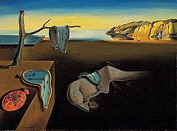

Name: THE PERSISTENCE OF MEMORY
Artist: Salvador Dali
Discription: The Persistence of Memory (Catalan: La persistència de la memòria) is a 1931 painting by artist Salvador Dalí, and one of his most recognizable works. First shown at the Julien Levy Gallery in 1932, since 1934 the painting has been in the collection of the Museum of Modern Art (MoMA) in New York City, which received it from an anonymous donor. It is widely recognized and frequently referenced in popular culture, and sometimes referred to by more descriptive (though incorrect) titles, such as "Melting Clocks", "The Soft Watches" or "The Melting Watches". [read more.
Dimensions:24cm×33cm(9.5in×13in)
Price: £59million